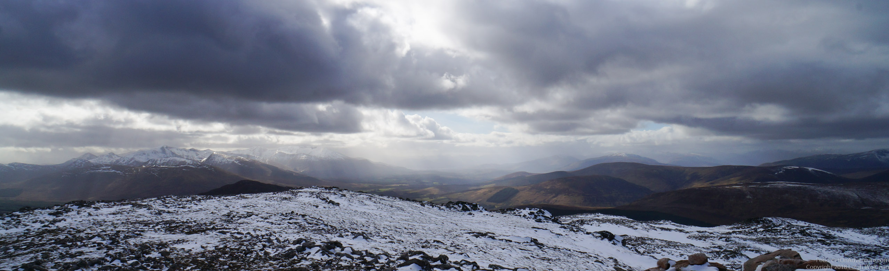

When my collegues asked me where I’d been in the weekend, I couldn’t help them out too much. These guys are 2 Munro’s next to Craig Meaggie, a spot famous for winter climbing (and avalanches), a bit South of Fort William. It was going to be a beautiful but windy day.
After a bit of a drive, we made it to the approach route, which was a cute single track route along a river. Will we ever get tired of this? Going up up up, we passed the snow border, but never was there deep enough snow that crampons were needed or the axes had to get off the bags. The views that high are zo amazing! Close to Fort William you have a view over the Nevis Range, than holds Ben Nevis, the highest mountain of the UK.
The top plateaux was bare and cold, and we saw a couple of guys climbing up one of the ridges on the East. The cornices on this hill are legendary. Wen visibility is bad, people sometimes use a compass course to get from one peak to the other, forgetting that it’s not completely straight between them, and don’t realize they are on an unstable cornice. However, we were warned, and, what was even better, we had great conditions so we could just see them and enjoy.
Slowly weather came in, and we were guided back by some interesting clouds. Leigh even managed to snap a picture of a rainbow on the way back. Another great day in the hills!
